Equipamentos da Bancada Processos
Conceitos e Aplicações dos Componentes de Automação Industrial
Esta página apresenta os 35 componentes da Bancada de Processo, cada um com o seu modelo, o conceito e as aplicações, organizados em quatro grupos:
- Itens 1 a 5: Controle, Comunicação e Alimentação Elétrica.
- Itens 6 a 12: Proteção Elétrica, Manobra e Medição.
- Itens 13 a 28: Acionamentos Elétricos, Pneumática e Vácuo.
- Itens 29 a 35: Comandos Manuais, Segurança e Sinalização.
Controle, Comunicação e Alimentação Elétrica
1. CLP
Siemens SIMATIC S7-1200 CPU 1215C DC/DC/DC (Modelo: 6ES7215-1AG40-0XB0)
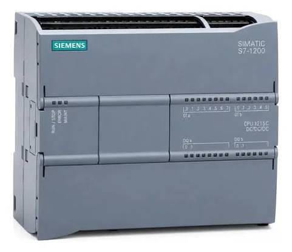
Conceito: O Controlador Lógico Programável (CLP) é um controlador industrial programável para automatizar máquinas e processos. Em vez de depender apenas de ligações fixas entre relés, ele executa um programa que pode ser alterado conforme a sequência desejada. Na prática, o CLP recebe sinais de entrada, processa as condições definidas no programa e atualiza as saídas para comandar dispositivos do processo.
Aplicações: Esteiras, máquinas de embalagem, células de montagem, sistemas de dosagem, posicionamento e linhas de produção. CLPs são úteis quando a operação exige repetibilidade, diagnóstico e alterações de lógica sem refazer toda a fiação.
Link do produto: Ver produto (mercadolivre.com.br)
2. Interface Homem-Máquina (IHM)
Siemens SIMATIC KTP700 Basic Touch 7" (Modelo: 6AV2123-2GB03-0AX0)
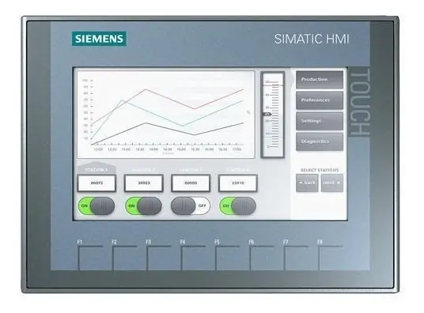
Conceito: A Interface Homem-Máquina (IHM) é o ponto de comunicação entre o operador e a automação. A referência é uma unidade SIMATIC KTP700 Basic, com tela TFT de 7 polegadas, combinação de toque e teclas e interface PROFINET. A tela apresenta informações do processo e permite enviar comandos, de acordo com as permissões configuradas no sistema.
Aplicações: Painéis de máquinas, acompanhamento de produção, seleção de receitas, ajuste autorizado de parâmetros, diagnóstico e orientação de operadores. Em aplicações industriais, pode exibir alarmes, estados de entradas e saídas, valores medidos e instruções para o operador.
Link do produto: Ver produto (mercadolivre.com.br)
3. Switch Industrial Ethernet
Siemens SCALANCE X005 de 5 portas (Modelo: 6GK5005-0BA00-1BA2)
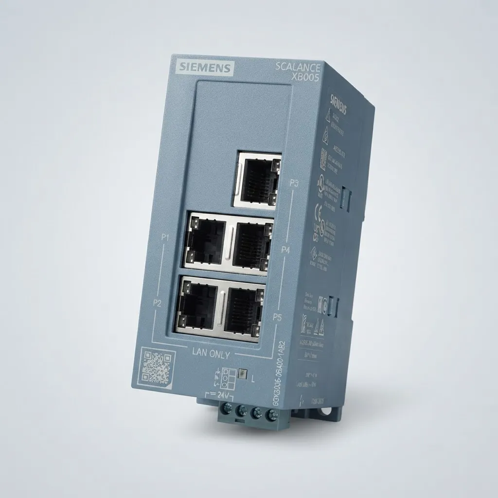
Conceito: Um switch Ethernet conecta vários equipamentos a uma mesma rede local e encaminha os quadros de dados para a porta apropriada. Ao organizar a comunicação entre os dispositivos, o switch ajuda a formar uma rede estruturada e facilita a troca de dados entre equipamentos compatíveis.
Aplicações: Redes de células de manufatura, painéis de controle e conexão de equipamentos de automação que utilizem Ethernet industrial. É aplicado, por exemplo, na ligação entre CLP, IHM, computadores industriais e outros dispositivos de rede, conforme a arquitetura adotada.
Link do produto: Ver produto (mercadolivre.com.br)
4. Ponto de Acesso / Repetidor Wi-Fi
Intelbras IWE 3000
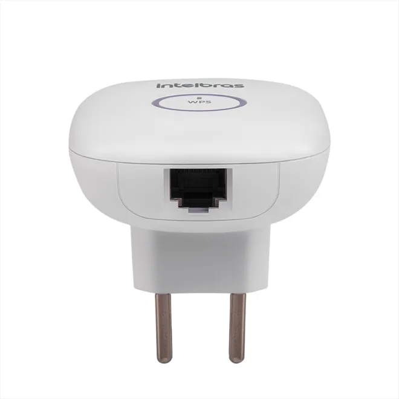
Conceito: É um dispositivo de rede sem fio destinado a ampliar a cobertura de Wi-Fi, conforme a variante e o modo configurado. Sua função depende do modo de configuração e da versão exata do equipamento.
Aplicações: Conectividade em áreas administrativas, oficinas, manutenção e monitoramento auxiliar de equipamentos compatíveis. Pode atender à conexão sem fio de dispositivos compatíveis em locais onde a infraestrutura de rede cabeada não chega; não substitui automaticamente uma rede industrial determinística.
Link do produto: Ver produto (schumann.com.br)
5. Fonte de Alimentação Chaveada 24 Vcc 10 A
Siemens SITOP PSU100L (Modelo: 6EP1334-1LB00)
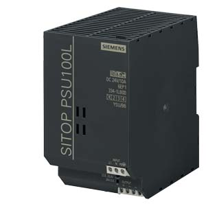
Conceito: Uma fonte chaveada converte a energia da rede em uma saída contínua regulada para os circuitos de comando. A referência informada é uma fonte monofásica SITOP de 24 Vcc e 10 A. A saída de 24 Vcc é comum em circuitos de comando industrial por ser adequada a muitos sensores, relés e módulos eletrônicos.
Aplicações: Painéis de automação, sistemas de sensores, módulos eletrônicos e circuitos de comando em máquinas. Pode alimentar diversos dispositivos de baixa tensão em um painel, desde que a corrente total e as condições elétricas estejam dentro dos limites da fonte.
Link do produto: Ver produto (digionenow.siemens.com)
Proteção Elétrica, Manobra e Medição
6. Relé de Segurança
Schneider Electric XPSBAC14AP
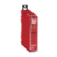
Conceito: Relé de segurança é um dispositivo de controle destinado a monitorar circuitos relacionados à segurança de máquinas. Ele não é apenas um relé auxiliar comum: sua arquitetura e os diagnósticos são voltados à função de segurança definida para o modelo. Ele atua dentro de uma arquitetura de segurança definida, monitorando dispositivos e condições previstas no projeto.
Aplicações: Esteiras, máquinas com movimento, células automatizadas e equipamentos em que uma falha possa expor pessoas a risco. Pode integrar circuitos com botões de emergência, chaves de proteção e outros dispositivos de segurança compatíveis, conforme a avaliação de risco da máquina.
Link do produto: Ver produto (se.com)
7. Contator Tripolar
Schneider Electric TeSys LC1D09BD
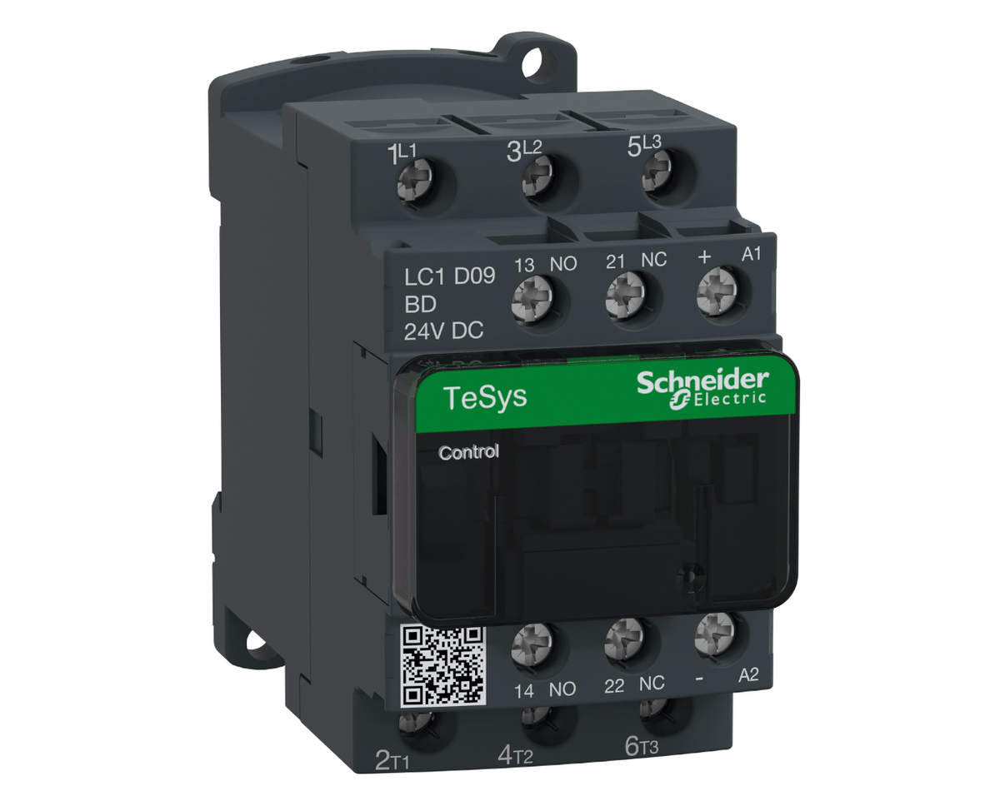
Conceito: Contator é um dispositivo eletromecânico usado para estabelecer ou interromper circuitos de potência por meio de um comando de baixa potência na bobina. Quando a bobina recebe o comando adequado, os contatos principais mudam de estado e permitem manobrar a carga prevista.
Aplicações: Motores, bombas, ventiladores, transportadores e outras cargas que exigem manobras repetidas. É utilizado quando uma carga precisa ser ligada e desligada por um circuito de comando, inclusive em acionamentos repetitivos de motores.
Link do produto: Ver produto (dimensional.com.br)
8. Bloco de Contatos Auxiliares
Schneider Electric TeSys LADN22
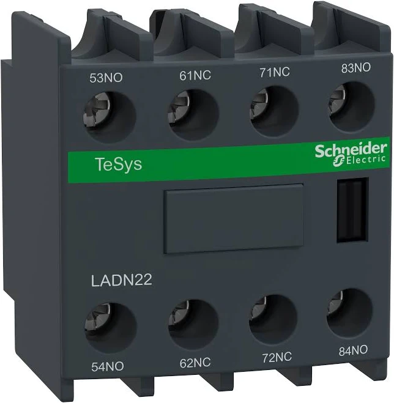
Conceito: É um acessório que aumenta a quantidade de contatos auxiliares disponíveis em um contator compatível. A referência LADN22 é associada a dois contatos normalmente abertos (NA) e dois normalmente fechados (NF). Os contatos auxiliares acompanham o estado mecânico do contator e disponibilizam sinais adicionais para outros circuitos.
Aplicações: Circuitos de comando, sinalização de estado, intertravamentos e lógicas de habilitação. São úteis para manter a lógica de comando, indicar se um contator está acionado ou impedir comandos incompatíveis entre equipamentos.
Link do produto: Ver produto (se.com)
9. Disjuntor Termomagnético Bipolar 10 A
Schneider Electric Easy9 (Modelo: EZ9F33210)
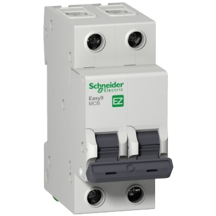
Conceito: Disjuntor termomagnético é um dispositivo de proteção que abre automaticamente o circuito em condições de sobrecorrente. A proteção térmica responde a sobrecargas, enquanto a magnética atua rapidamente em condições de curto-circuito, dentro das características do dispositivo.
Aplicações: Proteção de circuitos de distribuição e de comando dimensionados para a corrente e o nível de curto-circuito previstos. É aplicado em circuitos cuja corrente nominal e capacidade de interrupção foram calculadas para a instalação; a escolha não deve se basear apenas nos ampères.
Link do produto: Ver produto (se.com)
10. Interruptor Diferencial Residual (DR) Bipolar 25 A 30 mA
Schneider Electric Acti9 (Modelo: A9R74225)
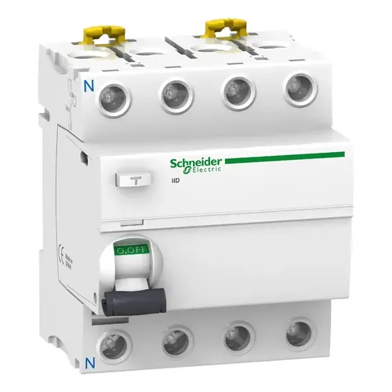
Conceito: O interruptor diferencial residual (IDR/DR) compara as correntes que passam pelos condutores ativos. Uma diferença indica que parte da corrente pode estar fluindo por um caminho não previsto, como uma fuga para terra. Diferentemente de um disjuntor de sobrecorrente, o DR detecta desequilíbrio de corrente e não substitui, por si só, a proteção contra sobrecarga e curto-circuito.
Aplicações: Proteção diferencial em circuitos nos quais o projeto e as normas aplicáveis exigem esse recurso. É usado como proteção complementar contra correntes de fuga, conforme o tipo de circuito, o esquema de aterramento e as exigências normativas aplicáveis.
Link do produto: Ver produto (se.com)
11. Chave Seccionadora Geral 12 A
Schneider Electric Vario VCF02
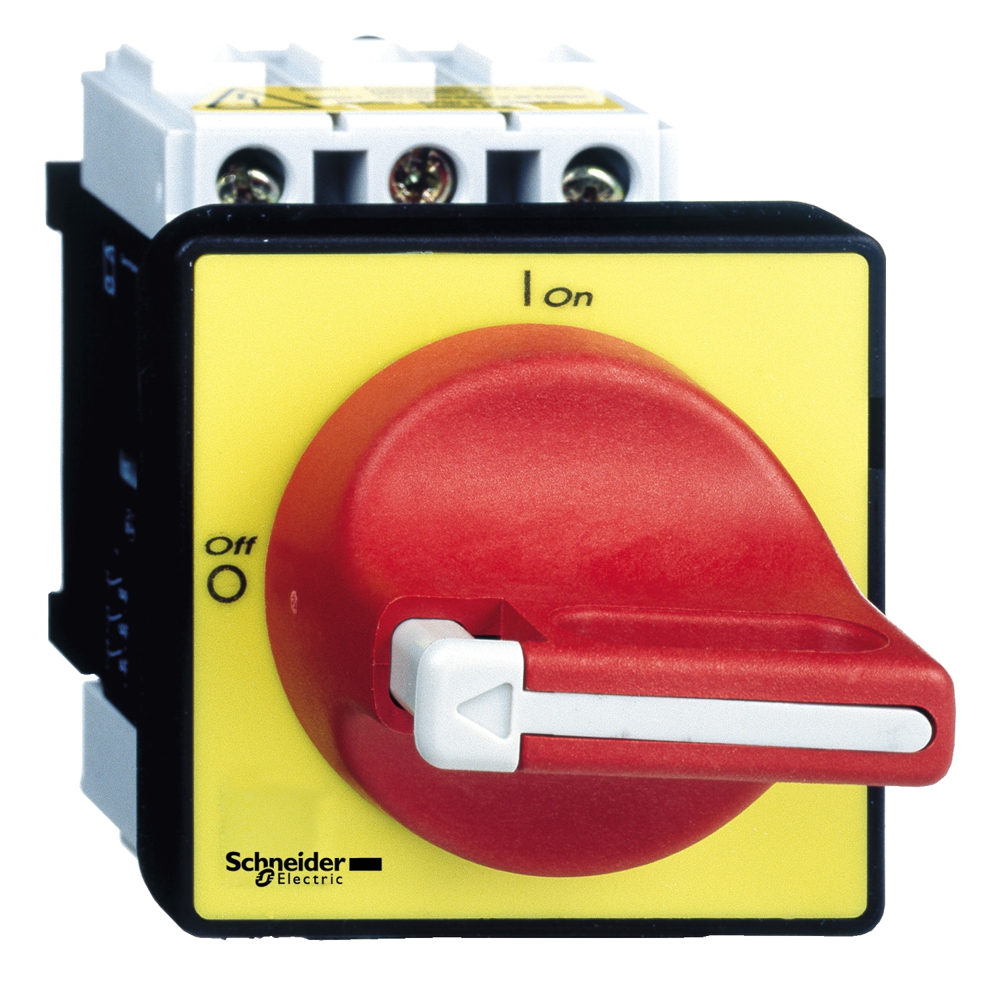
Conceito: Seccionadora é um dispositivo destinado a estabelecer ou isolar um circuito conforme a capacidade especificada. Uma chave geral permite interromper a alimentação de um conjunto para o isolamento previsto. A seccionadora é destinada ao isolamento previsto no circuito e não deve ser confundida com um dispositivo de proteção contra sobrecorrente.
Aplicações: Seccionamento de máquinas, painéis, equipamentos de produção e circuitos de alimentação. É comum em entradas de painéis e máquinas para permitir o desligamento da alimentação antes de intervenções, seguindo os procedimentos de segurança.
Link do produto: Ver produto (se.com)
12. Multimedidor de Energia
Smart Sense
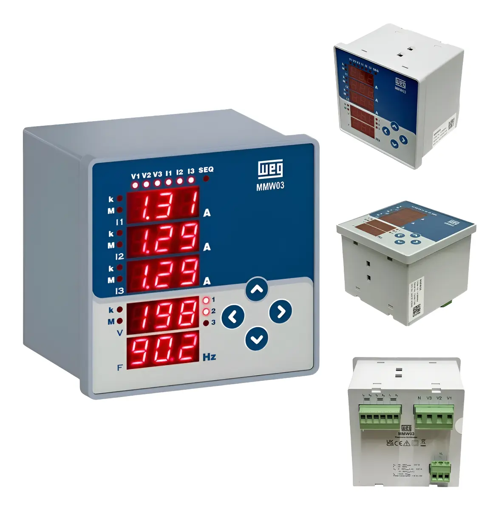
Conceito: Multimedidor é um instrumento que reúne medições de grandezas elétricas em um único equipamento. Dependendo do modelo, pode apresentar valores como tensão, corrente, potência, fator de potência e energia acumulada.
Aplicações: Monitoramento energético, acompanhamento de cargas, comparação de consumos e identificação de desvios de operação. É utilizado para acompanhar o consumo de máquinas e instalações, apoiar a gestão de energia e comparar o comportamento elétrico em diferentes períodos.
Link do produto: Ver produto (mercadolivre.com.br)
Acionamentos Elétricos, Pneumática e Vácuo
13. Driver de Atuador Elétrico
SMC JXCP18-BC
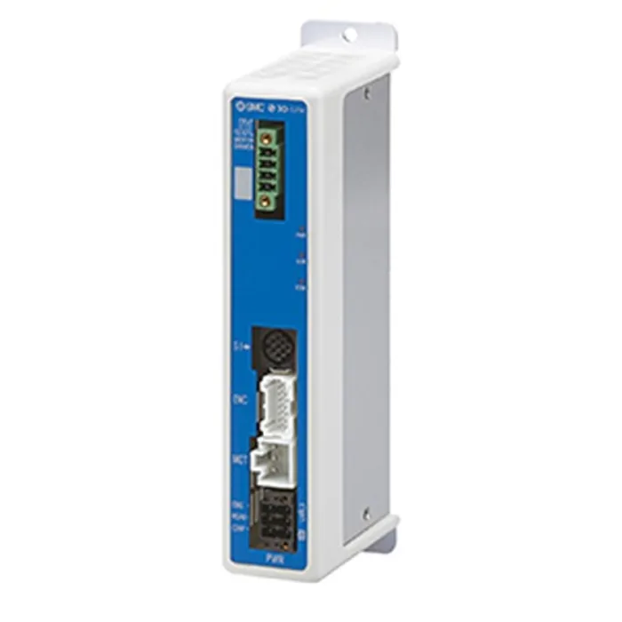
Conceito: Driver ou controlador de atuador elétrico é o equipamento eletrônico que recebe comandos de movimento e fornece o acionamento compatível ao atuador e ao motor correspondentes. O driver interpreta os sinais de comando e controla o acionamento do atuador de acordo com as características do conjunto conectado.
Aplicações: Manipuladores cartesianos, posicionamento de ferramentas, transferência de peças, montagens e máquinas que precisam de movimentos repetíveis. É aplicado em sistemas que exigem deslocamentos controlados e repetíveis, como eixos lineares, posicionadores e mecanismos de manipulação.
Link do produto: Ver produto (br.rsdelivers.com)
14. Atuador Elétrico Linear (Eixo X)
SMC LEFS16RB-400

Conceito: Atuador linear elétrico transforma o acionamento de um motor em deslocamento retilíneo. Em geral, um mecanismo de transmissão converte rotação em movimento ao longo de um trilho. O deslocamento e a repetibilidade dependem do modelo, da carga, da montagem e dos parâmetros de controle utilizados.
Aplicações: Transporte horizontal, posicionamento em estações, alimentação de máquinas, marcação/gravação e sistemas cartesianos. É adequado a tarefas que precisam levar uma peça ou ferramenta a uma posição definida, por exemplo entre estações de trabalho ou pontos de inspeção.
Link do produto: Ver produto (smcpneumatics.com)
15. Atuador Elétrico Linear com Guia (Eixo Y)
SMC LEYG16MB-150
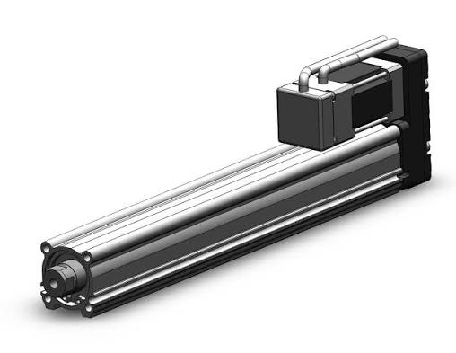
Conceito: É um atuador linear elétrico com mecanismo de guia, destinado a deslocar uma carga enquanto ajuda a controlar a trajetória e suportar os esforços laterais previstos. A guia contribui para sustentar a carga e controlar o movimento, respeitando os limites mecânicos especificados pelo fabricante.
Aplicações: Posicionamento transversal, transferência entre pontos, montagem, inspeção e manuseio automático. Pode ser utilizado em transferências laterais, posicionamento de componentes e mecanismos de montagem que precisam manter a trajetória do movimento.
Link do produto: Ver produto (smcpneumatics.com)
16. Atuador Pneumático Básico (Eixo Z)
SMC CD85N12-100-B
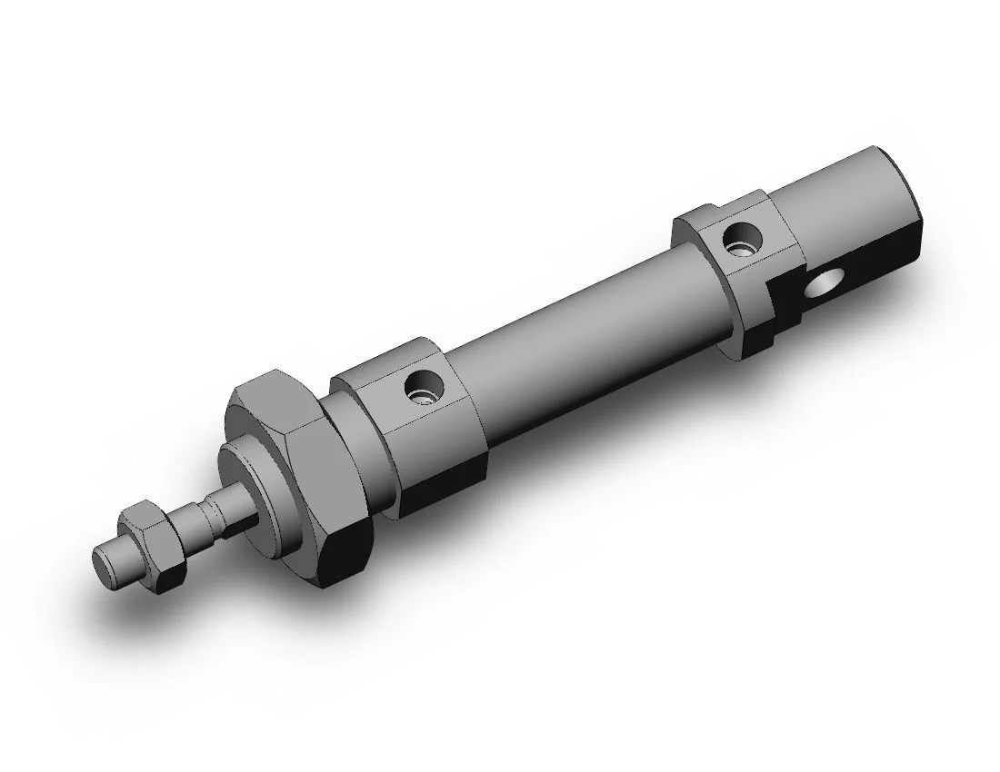
Conceito: Cilindro pneumático transforma energia do ar comprimido em deslocamento linear de uma haste. Está associado ao eixo Z, normalmente usado para movimento vertical de aproximação ou afastamento. O movimento ocorre quando o ar comprimido atua sobre o pistão interno, deslocando a haste conforme a construção do cilindro.
Aplicações: Fixação, ejeção, batentes, pequenas elevações, aperto e posicionamento de componentes. É aplicado em operações simples de avanço e retorno, como empurrar peças, acionar batentes e aproximar ferramentas de uma posição de trabalho.
Link do produto: Ver produto (tonaautomacao.lojaintegrada.com.br)
17. Cilindros Pneumáticos do Stopper da Esteira
SMC Série CJ1
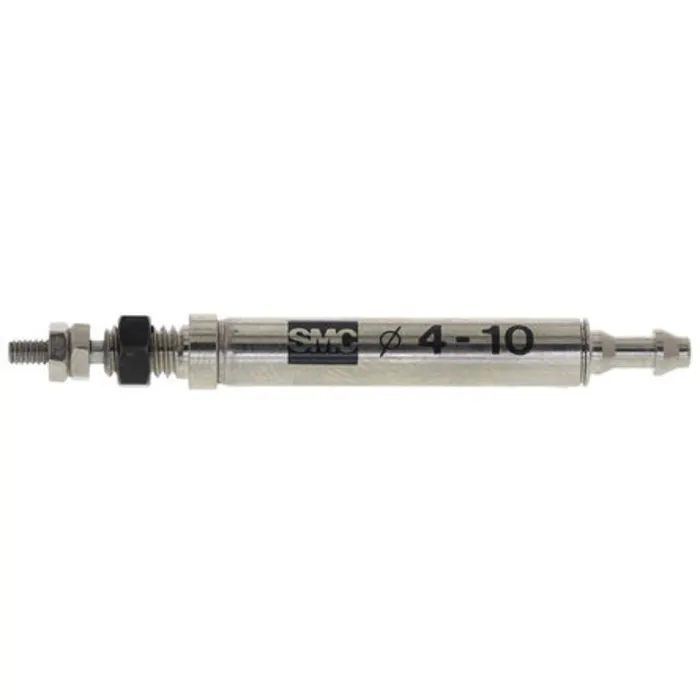
Conceito: Cilindros compactos da série CJ1 são usados em mecanismos de pequeno porte. Nesta bancada, são associados ao stopper, ou batente de parada, da esteira. O stopper funciona como um batente comandado, permitindo reter ou liberar peças em pontos determinados do transportador.
Aplicações: Indexação de peças, separação de produtos, alimentação de postos de trabalho e controle do fluxo em transportadores. É útil para espaçar produtos, organizar a chegada às estações e controlar a sequência de alimentação de uma linha automatizada.
Link do produto: Ver produto (fi.rsdelivers.com)
18. Vacuostatos Digitais (Manipulador e Mesa de Gravação)
SMC ZSE10F-M5-E-GRK
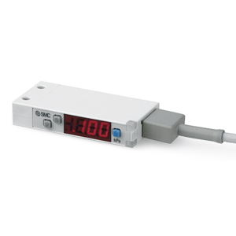
Conceito: Vacuostato é um sensor de pressão usado para verificar o nível de vácuo. A versão digital pode apresentar leitura numérica e produzir saídas elétricas conforme limites configurados. O sensor fornece uma indicação do nível de vácuo para que o sistema verifique se a condição de sucção atingiu o limite configurado.
Aplicações: Pick-and-place, embalagem, manuseio de chapas, alimentação de máquinas e robótica de sucção. É aplicado para confirmar a pega de uma peça antes de movimentá-la e para detectar perda de sucção em operações automatizadas.
Link do produto: Ver produto (smcusa.com)
19. Geradores de Vácuo (Ejetores)
SMC ZU07S
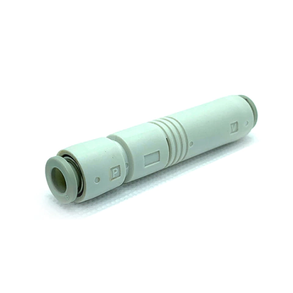
Conceito: Ejetor pneumático gera vácuo utilizando ar comprimido, em geral pelo efeito Venturi. É diferente de uma bomba de vácuo elétrica: aproveita o fluxo de ar para criar uma região de baixa pressão. O ar comprimido atravessa um bocal interno e produz uma região de baixa pressão que permite aspirar ar no circuito de vácuo.
Aplicações: Manipulação de peças, embalagem, pick-and-place, sistemas de fixação e transporte de materiais leves. É empregado em sistemas compactos de sucção quando se deseja pegar, manter ou transferir peças sem recorrer a uma bomba de vácuo dedicada.
Link do produto: Ver produto (expper.com.br)
20. Ventosa de Sucção da Mesa de Gravação
SMC ZPT10BN-A5
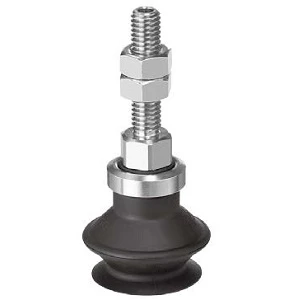
Conceito: A ventosa é o elemento flexível que entra em contato com a peça e permite segurá-la por diferença de pressão. O modelo é indicado para a mesa de gravação. A vedação entre a borda da ventosa e a superfície da peça é importante para manter a sucção; superfícies porosas ou irregulares podem dificultar a pega.
Aplicações: Fixação de peças para marcação, gravação, inspeção e pequenas operações de montagem. Pode segurar temporariamente uma peça durante a gravação ou inspeção, reduzindo seu deslocamento enquanto a operação é executada.
Link do produto: Ver produto (automationdistribution.com)
21. Ventosa de Sucção do Manipulador
SMC ZPT (25 mm)

Conceito: É uma ventosa para agarrar peças por vácuo, com diâmetro nominal de 25 mm. O diâmetro, o formato e o material da ventosa influenciam a força de retenção e a compatibilidade com a superfície manipulada.
Aplicações: Transferência de peças, separação de produtos, alimentação de máquinas e manipulação de componentes frágeis ou com superfície adequada à sucção. É aplicada na coleta e transferência automática de objetos, desde que a peça tenha superfície e massa compatíveis com o sistema de vácuo.
Link do produto: Ver produto (pt.aliexpress.com)
22. Válvula Solenoide Direcional
SMC SY5120-5DZ-01
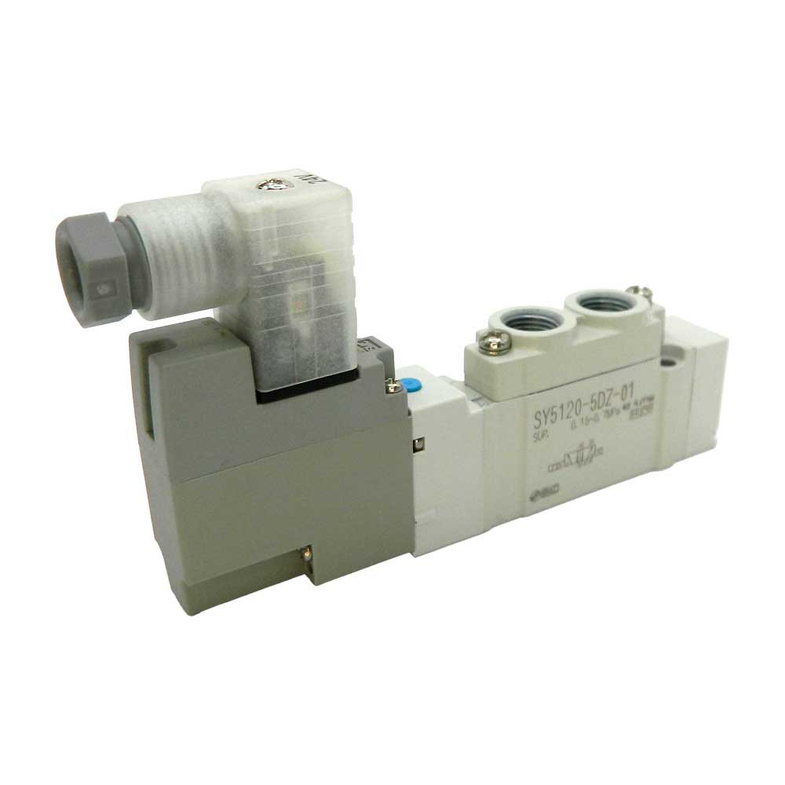
Conceito: Válvula direcional eletropneumática determina para onde o ar comprimido flui. O código da SMC identifica uma válvula da série SY5000, de cinco vias, duas posições e acionamento por solenoide; a variante informada é de 24 Vcc. A comutação dos canais internos direciona o ar para avançar, retornar ou alterar o estado de um atuador, conforme o circuito pneumático.
Aplicações: Automação de cilindros, pinças pneumáticas, dispositivos de fixação e sequências pneumáticas. É usada para comandar cilindros e outros elementos pneumáticos a partir de sinais elétricos do sistema de automação.
Link do produto: Ver produto (heldtsolucoesindustriais.com.br)
23. Válvula Solenoide de Segurança
SMC VP544-5DZ1-03-X538
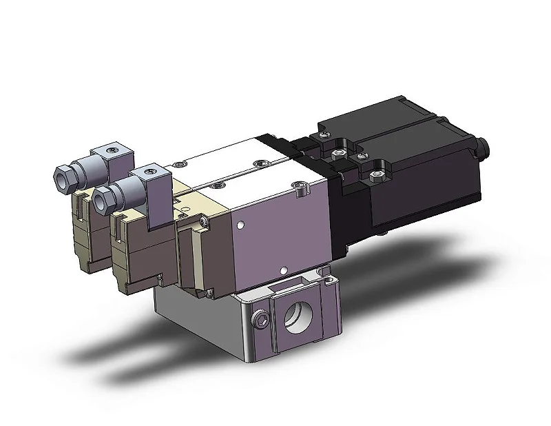
Conceito: É uma válvula SMC da família VP500, identificada como válvula solenoide de segurança. Esse tipo de componente participa do controle da energia pneumática de uma máquina, podendo permitir descarga de pressão em uma condição de segurança. Por ser indicada como componente de segurança, sua aplicação deve respeitar a função prevista, os requisitos do fabricante e o projeto de segurança completo.
Aplicações: Máquinas e células pneumáticas em que a gestão da energia armazenada é parte da estratégia de segurança. Pode ser integrada a sistemas que precisam controlar ou descarregar energia pneumática em situações definidas, sem substituir a validação do conjunto de segurança.
Link do produto: Ver produto (tonaautomacao.lojaintegrada.com.br)
24. Válvula de Bloqueio Manual
SMC VHS20-02B
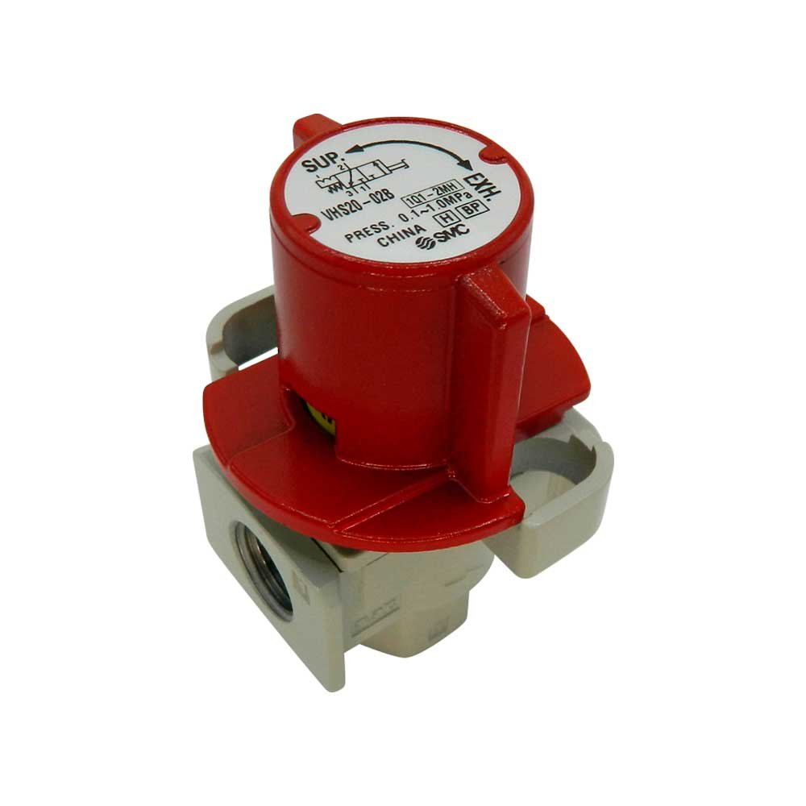
Conceito: Válvula manual de bloqueio pneumático usada para isolar a alimentação de ar. As versões de exaustão permitem aliviar a pressão residual do circuito a jusante quando colocadas na posição correspondente. O bloqueio ajuda a interromper a alimentação pneumática; quando a válvula inclui exaustão, também pode permitir aliviar a pressão residual do trecho isolado.
Aplicações: Preparação para manutenção, isolamento de ramais e circuitos pneumáticos de máquinas. É aplicada em pontos de isolamento de máquinas e ramais pneumáticos durante preparação, ajuste ou manutenção, seguindo os procedimentos estabelecidos.
Link do produto: Ver produto (heldtsolucoesindustriais.com.br)
25. Válvula Direcional Manual
SMC VHK2-06F-06FL
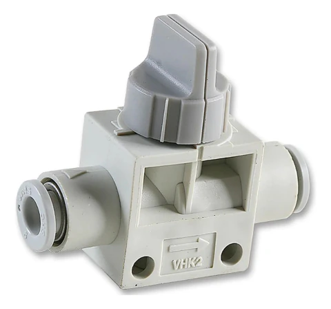
Conceito: É uma válvula pneumática operada manualmente para alterar o caminho do ar num pequeno circuito. Ao contrário da válvula solenoide, sua atuação não depende diretamente de uma bobina elétrica. A posição da alavanca ou do comando manual altera a passagem de ar conforme as vias e posições internas da válvula.
Aplicações: Testes de bancada, pequenos mecanismos pneumáticos, comandos locais e ajustes de máquinas. É útil para testes locais, acionamentos manuais e demonstrações didáticas de circuitos pneumáticos.
Link do produto: Ver produto (loja.realtecautomacao.com.br)
26. Filtro Regulador de Ar Comprimido
SMC AW20-F01BCE-B
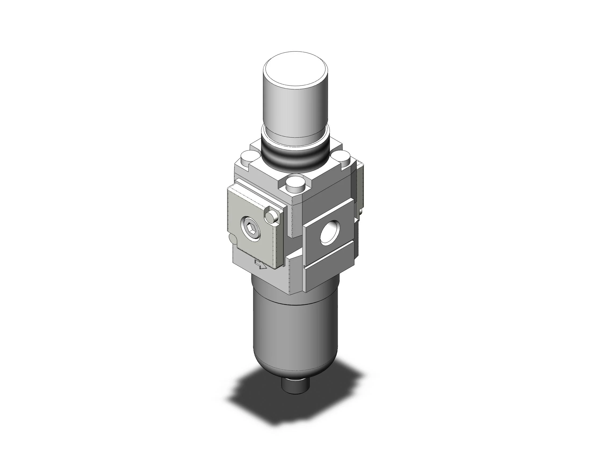
Conceito: O filtro regulador reúne duas funções: reduzir partículas/condensado do ar comprimido e regular a pressão entregue ao circuito. Integra a preparação do ar antes de alimentar componentes pneumáticos. O filtro retém partículas e separa parte do condensado, enquanto o regulador ajusta a pressão de saída dentro da faixa especificada.
Aplicações: Preparação de ar para máquinas, circuitos pneumáticos, válvulas, cilindros e equipamentos que exigem pressão controlada. É instalado antes de válvulas e cilindros para fornecer ar tratado e pressão adequada, ajudando a reduzir problemas causados por contaminantes ou pressão incorreta.
Link do produto: Ver produto (tonaautomacao.lojaintegrada.com.br)
27. Motores DC da Esteira
Motorredutor 33 RPM 24 V / Motor DC (Modelos: 100401524 / MR101-B035-PW)
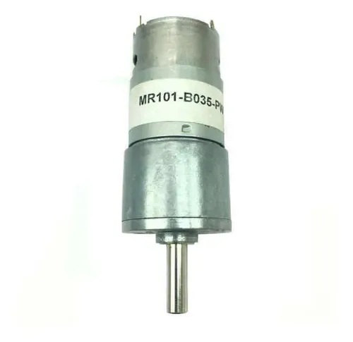
Conceito: Motor de corrente contínua (DC/CC) converte energia elétrica em rotação. Um motorredutor combina motor e redução mecânica, permitindo obter rotação menor e torque disponível maior do que o motor sozinho. A redução mecânica permite adequar a velocidade e o torque às necessidades do transportador, enquanto o controle depende do circuito elétrico utilizado.
Aplicações: Transportadores leves, mecanismos de alimentação, equipamentos didáticos e sistemas de movimentação de baixa potência. É aplicado em esteiras compactas e mecanismos de transporte de peças leves, especialmente em sistemas didáticos ou de baixa potência.
Link do produto: Ver produto (mercadolivre.com.br)
28. Sensores Magnéticos de Posição (Reed Switch)
SMC D-A93L
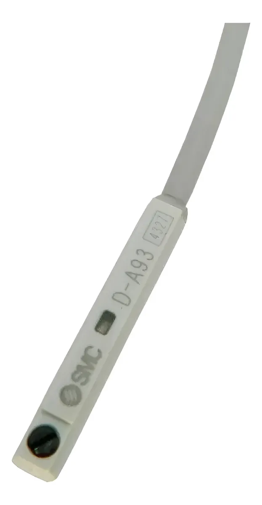
Conceito: Sensor magnético de posição detecta o campo magnético de um ímã, normalmente incorporado ao pistão de um cilindro pneumático compatível. A referência D-A93L é associada a sensor Reed com indicação luminosa. Quando o ímã do pistão se aproxima da região sensora, o contato interno comuta e fornece um sinal elétrico de posição.
Aplicações: Confirmação de posições de cilindros, intertravamento de etapas, diagnóstico de mecanismos e sequenciamento de movimentos pneumáticos. É usado para confirmar o fim de curso de cilindros, liberar a próxima etapa de uma sequência e identificar se um movimento pneumático foi concluído.
Link do produto: Ver produto (mercadolivre.com.br)
Comandos Manuais, Segurança e Sinalização
29. Botão de Emergência
Schneider Electric Harmony XB5AS8444
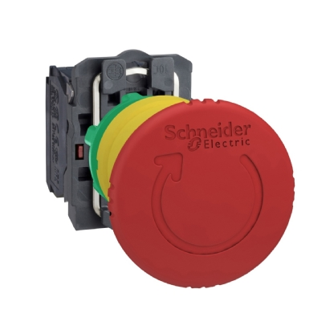
Conceito: Botão de emergência é um dispositivo manual para solicitar a parada de emergência quando uma situação perigosa é percebida. O modelo informado é do tipo cogumelo vermelho de 40 mm, com destravamento por giro e contatos NF na configuração listada pelo fabricante. O acionamento deve iniciar a função de parada de emergência definida no projeto; o dispositivo não substitui proteções físicas nem elimina todos os riscos.
Aplicações: Máquinas com partes móveis, linhas de transporte, células de montagem e equipamentos com risco mecânico. É instalado em locais acessíveis ao operador e próximos a situações de risco, conforme a avaliação de risco e os requisitos aplicáveis à máquina.
Link do produto: Ver produto (se.com)
30. Botão de Reset Iluminado
Schneider Electric ZB5AW363 / ZB5AW0B61
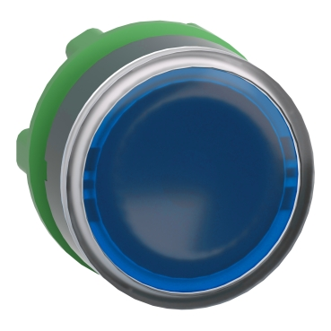
Conceito: O reset é um comando manual que solicita o rearme de uma condição de bloqueio, alarme ou circuito de segurança depois que a causa da parada foi removida. O reset não deve provocar, por si só, a partida inesperada da máquina: sua função é solicitar o rearme quando as condições necessárias forem atendidas.
Aplicações: Painéis de máquinas, retorno controlado após falha e rearme de circuitos de segurança. É utilizado em painéis de operação para permitir o retorno controlado após uma falha ou parada, conforme a lógica de comando e segurança.
Link do produto: Ver produto (se.com)
31. Botão de Impulsão Start (Verde)
Schneider Electric Easy Harmony XA2EA31
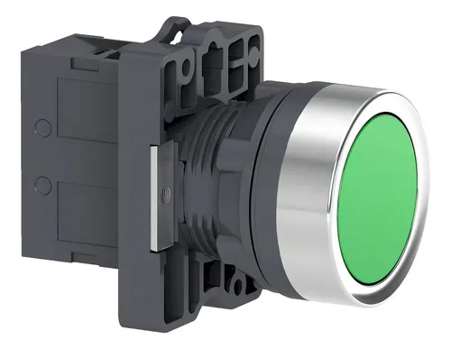
Conceito: Botão momentâneo de partida. A referência XA2EA31 é descrita pelo fabricante como botão verde, com retorno por mola e um contato NA (normalmente aberto). Por ser momentâneo, o botão retorna à posição inicial quando é solto; o efeito final depende do circuito de comando.
Aplicações: Partida de ciclos, início de processos, comando de máquinas e solicitações de operação. É empregado para iniciar uma sequência ou solicitar a partida quando as permissões e condições necessárias estiverem satisfeitas.
Link do produto: Ver produto (se.com)
32. Botão de Impulsão Stop (Vermelho)
Schneider Electric Easy Harmony XA2EA42
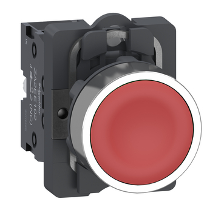
Conceito: Botão momentâneo vermelho para solicitar a parada normal da operação. A referência é associada a retorno por mola e contato NF, configuração comum para comando de Stop. O contato NF é frequentemente usado para que a abertura do circuito de comando solicite a parada normal, conforme o projeto elétrico.
Aplicações: Parada de ciclo, encerramento de processo e interrupção normal de máquinas. É utilizado para encerrar um ciclo ou interromper a operação de forma rotineira, diferenciando-se da função específica de parada de emergência.
Link do produto: Ver produto (se.com)
33. Chave Comutadora 2 Posições Fixas
Schneider Electric Easy Harmony XA2ED21
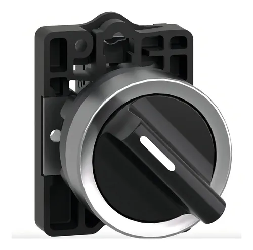
Conceito: Chave seletora mantida em duas posições: o operador escolhe uma posição e ela permanece até ser girada novamente. A referência é associada a duas posições fixas e um contato NA. A posição mantida permite selecionar uma condição que permanece ativa até nova atuação do operador.
Aplicações: Seleção de modo de operação, escolha de configuração e ativação de funções permitidas. Pode selecionar modos como manual e automático ou habilitar uma função, desde que a lógica e a sinalização indiquem claramente a seleção.
Link do produto: Ver produto (se.com)
34. Sinaleiro LED Verde (Segurança OK)
Schneider Electric Easy Harmony XA2EVB3LC
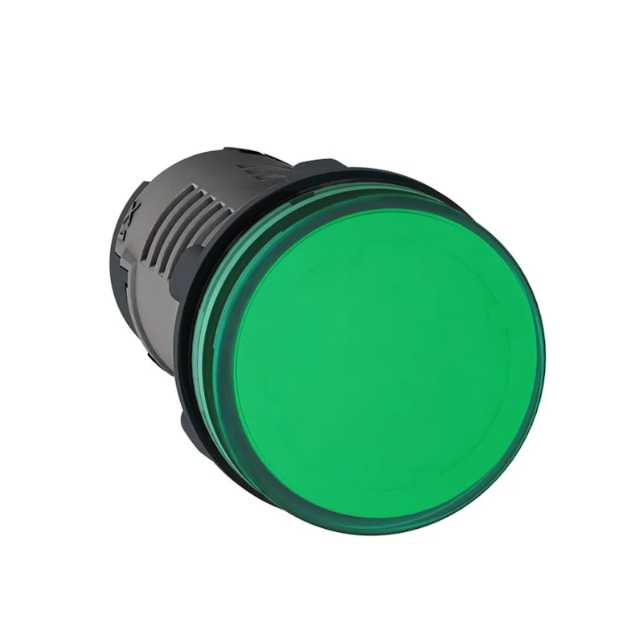
Conceito: Sinaleiro LED é um indicador luminoso usado para transmitir o estado de um circuito ou máquina. Na bancada, é relacionado à indicação “Segurança OK”, o que só é verdadeiro se a fiação e a lógica atribuírem esse significado. A cor verde costuma ser usada para indicar uma condição normal ou disponibilidade, mas o significado real é determinado pelo projeto e pela lógica.
Aplicações: Indicação de equipamento pronto, operação habilitada, condição normal ou etapa concluída. Pode informar que o equipamento está pronto, que uma etapa terminou ou que uma condição de operação foi autorizada.
Link do produto: Ver produto (se.com)
35. Sinaleiro LED Vermelho (Segurança Acionada)
Schneider Electric Easy Harmony XA2EVB4LC
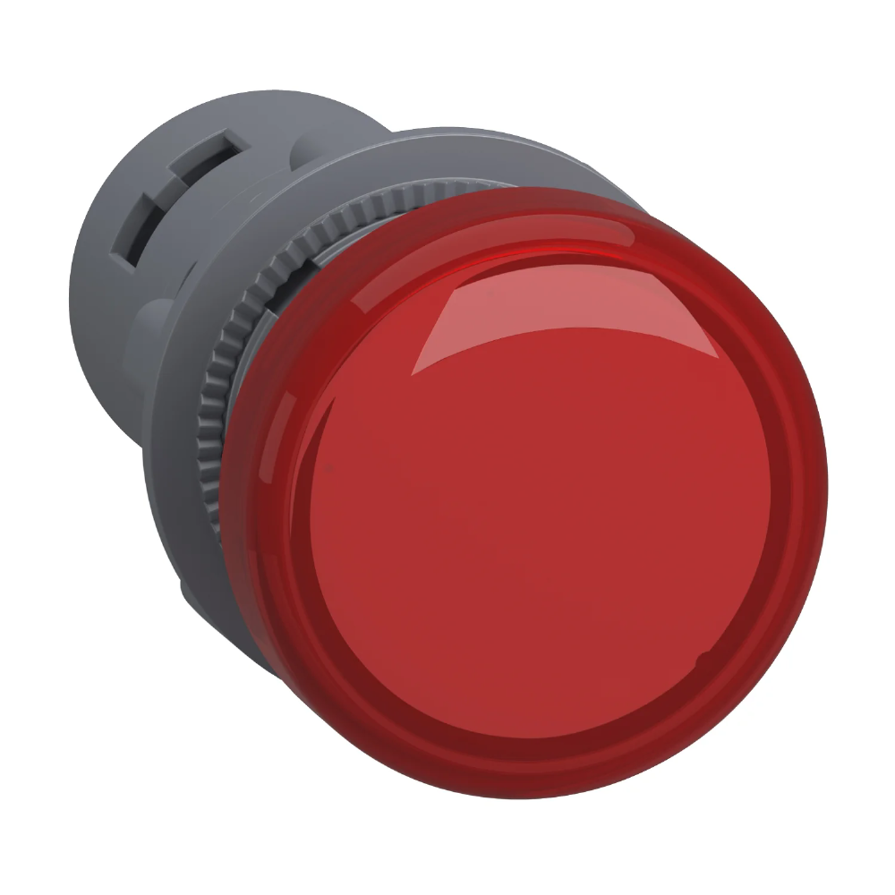
Conceito: Sinaleiro vermelho indica visualmente uma condição definida pelo circuito, como falha, parada ou atenção. Está associado à expressão “Segurança Acionada”. A cor vermelha chama a atenção para uma condição que requer observação, mas o significado exato deve estar identificado no painel.
Aplicações: Alarmes visuais, condição de falha, parada de máquina e aviso para o operador. Pode sinalizar falhas, alarmes ou estados de segurança definidos pelo sistema, auxiliando o operador a reconhecer rapidamente a situação.
Link do produto: Ver produto (se.com)